Ramos de novia
Diseñados a medida para cada novia: clásicos, silvestres, en cascada o de una sola flor. También ramos para madrinas y damas de honor.

Aconsejamos a los novios sin perder su idea, para que la boda sea como la han imaginado.
Decoramos celebraciones religiosas y civiles en Córdoba: desde el ramo de novia hasta la iglesia, el lugar del banquete y los pequeños detalles para los invitados.
Cada ramo de novia se diseña según el vestido y la personalidad de la novia, para que sea único.
Diseñados a medida para cada novia: clásicos, silvestres, en cascada o de una sola flor. También ramos para madrinas y damas de honor.
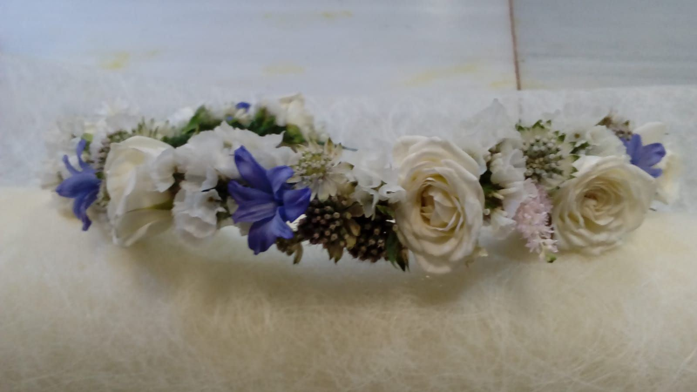
Diademas y coronas de flores para novias y niñas de arras, prendidos para el novio y los padrinos, a juego con el ramo.
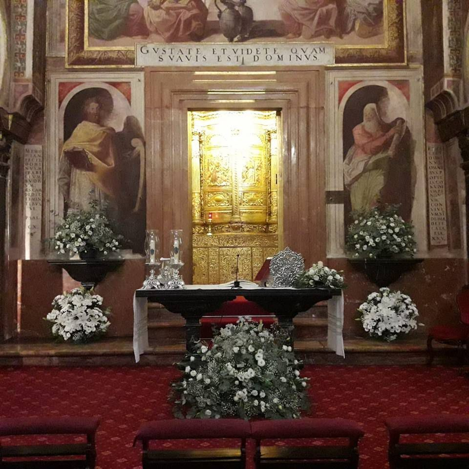
Altar, bancos, pasillo y entrada de la iglesia. Centros de mesa y decoración floral del lugar del banquete.
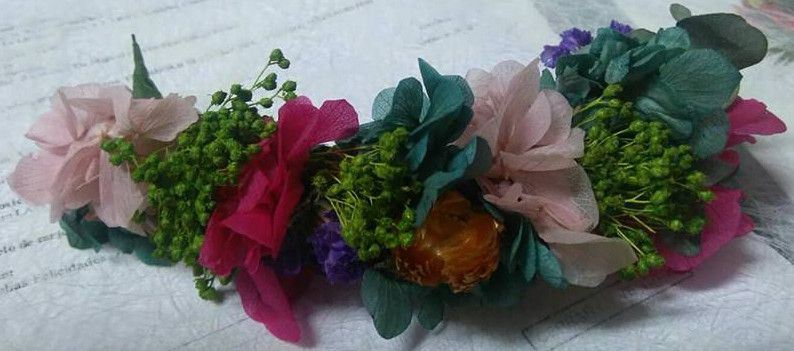
Una cita, una propuesta y nos olvidamos de las flores hasta el día de la boda.
Pulsa en una foto para verla en grande.

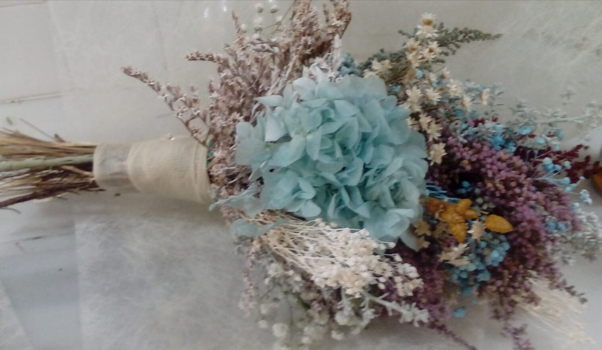
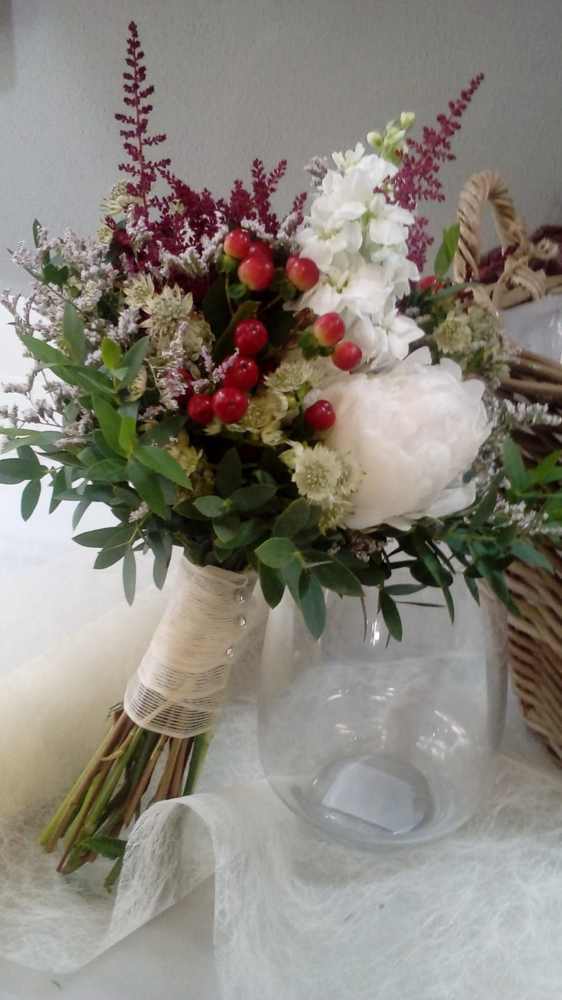
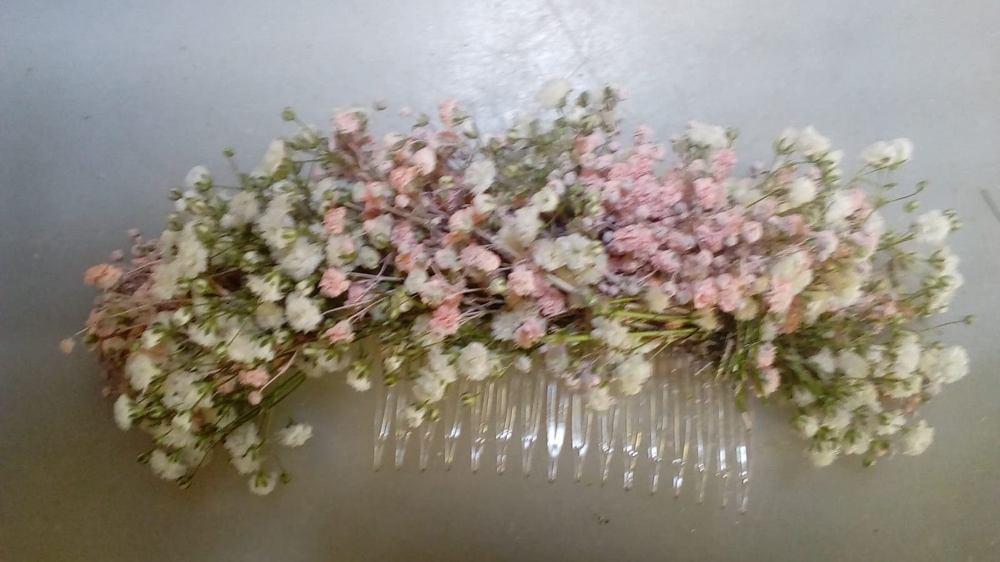
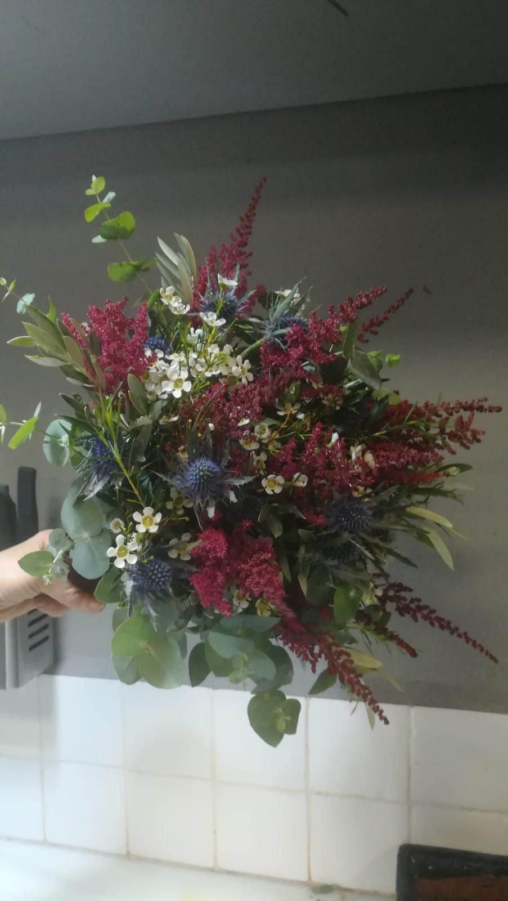


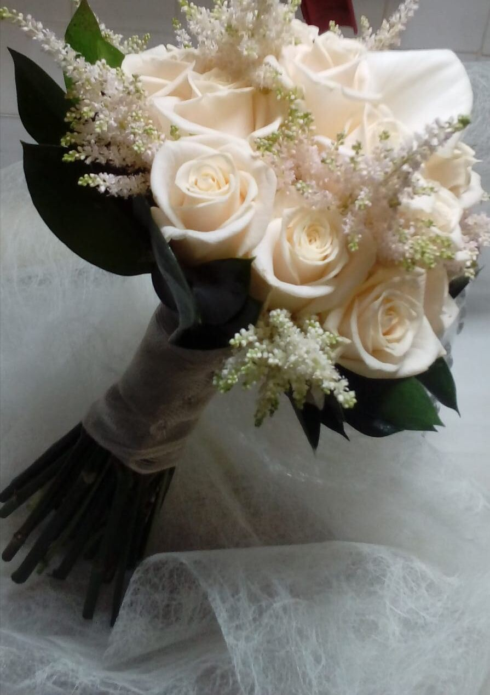
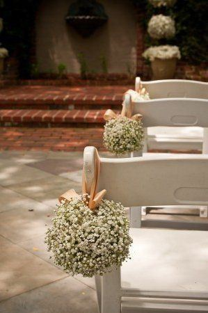
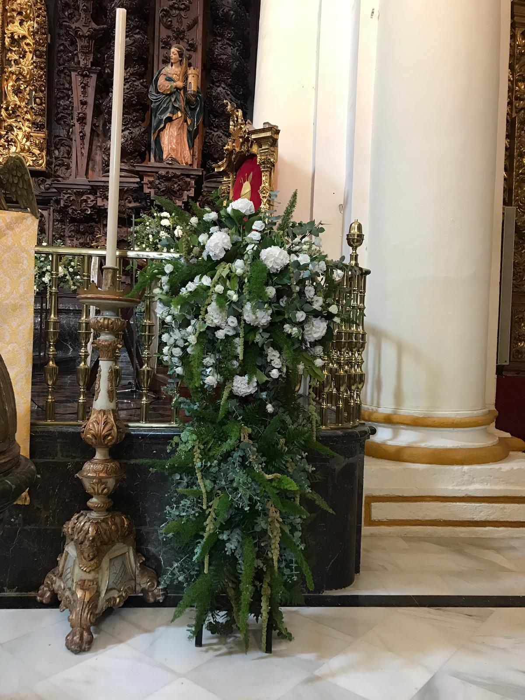
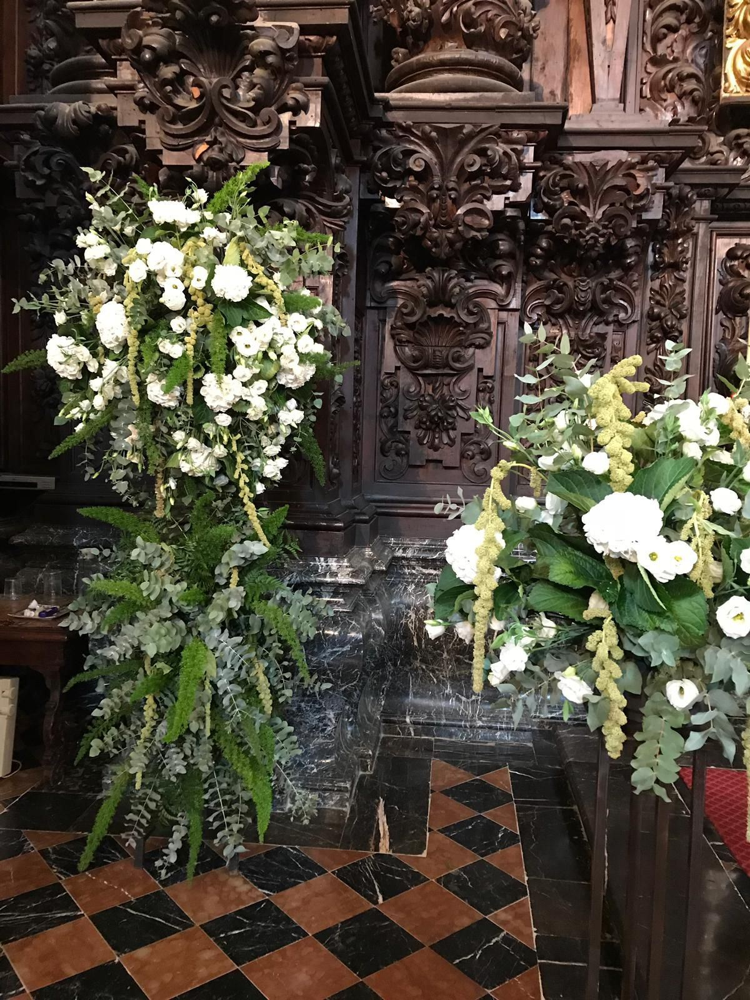
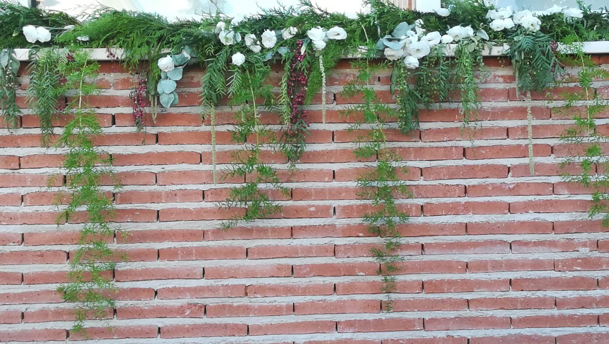
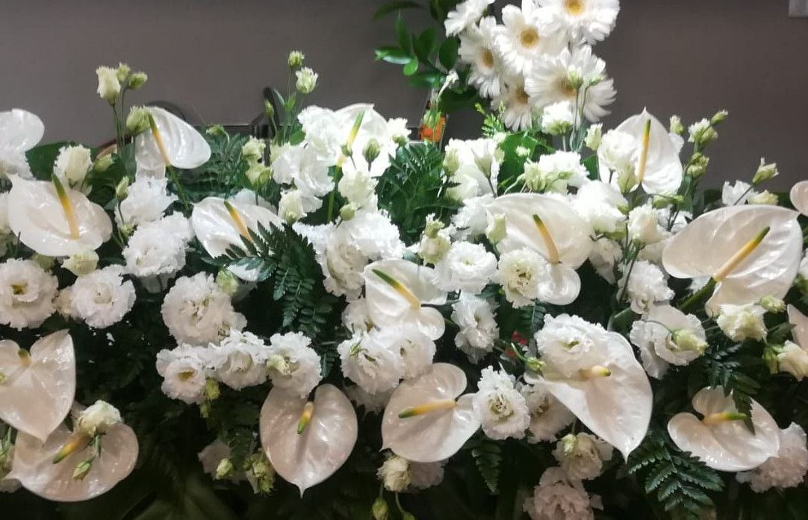
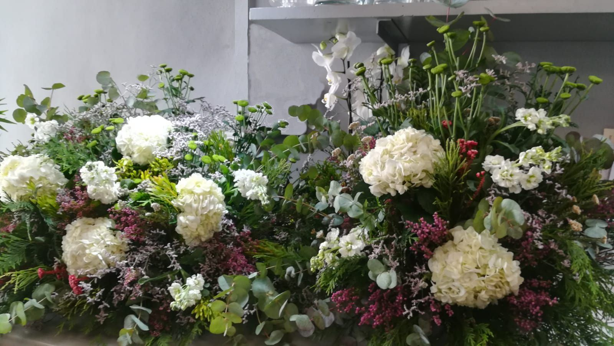
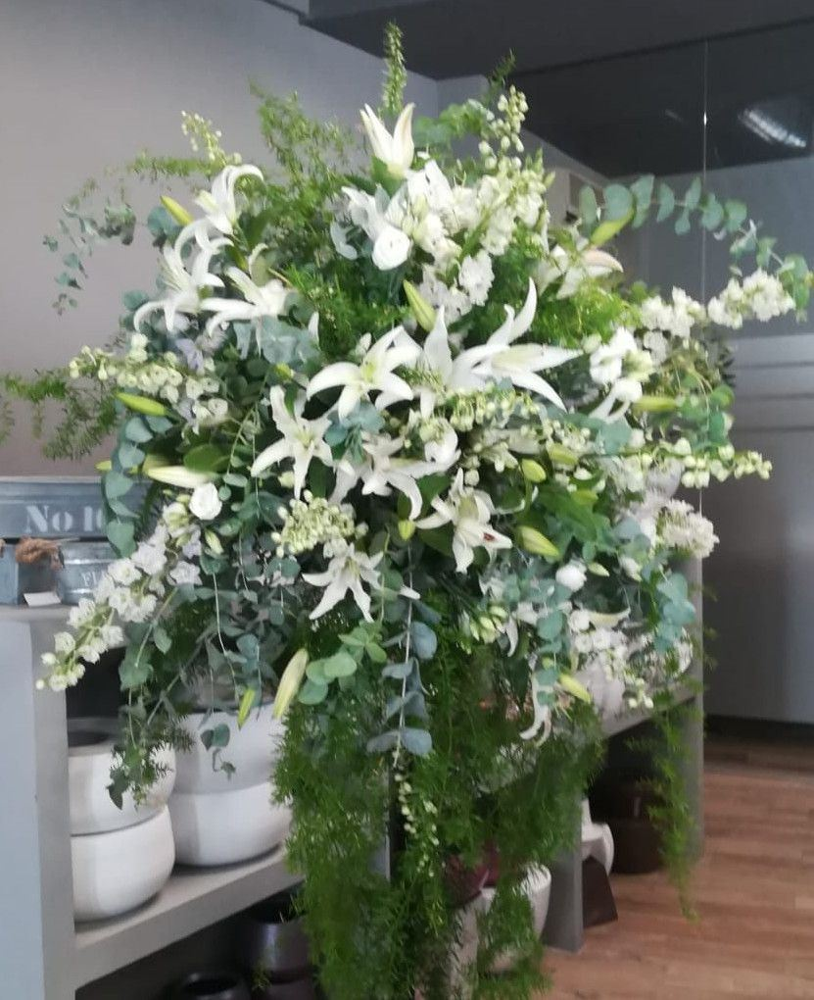
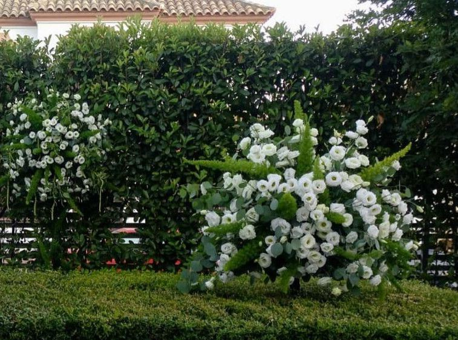
Cuanto antes mejor, sobre todo en primavera y otoño. Lo ideal es vernos unos meses antes para reservar la fecha y elegir las flores.
Sí. Podemos encargarnos solo del ramo y los complementos, o de toda la decoración floral de la boda.
Decoramos iglesias, ayuntamientos, fincas y hoteles de Córdoba. Si la celebración es fuera, pregúntanos.
Contadnos la fecha y el lugar y os damos cita para hablar de las flores.